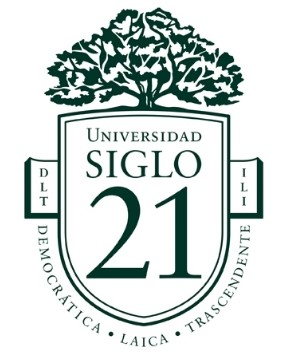

Universidad Siglo 21: Derecho
Actualmente estoy en la última etapa de la carrera de Derecho. Aunque todavía no he rendido todas las materias, estoy próximo a completar este desafío académico. La carrera me ha proporcionado una formación integral en las diversas áreas legales, incluyendo derecho civil, penal, laboral, y administrativo, preparándome para asesorar y representar legalmente en múltiples contextos.
